Getting started#
Installation#
Awkward Array can be installed from the conda-forge channel.
conda install -c conda-forge awkward
Binary wheels for Awkward Array are available on PyPI.
pip install awkward
Overview#
What kind of data does Awkward Array handle?
Awkward Array is designed to make working with ragged arrays as trivial as manipulating regular (non-ragged) N-dimensional arrays in NumPy. It understands data with variable-length lists,
>>> ak.Array([
... [1, 2, 3],
... [4]
... ])
<Array [[1, 2, 3], [4]] type='2 * var * int64'>
missing (None) values,
>>> ak.Array([1, None])
<Array [1, None] type='2 * ?int64]'>
record structures,
>>> ak.Array([{'x': 1, 'y': 2}])
<Array [{x: 1, y: 2}] type='1 * {x: int64, y: int64}'>
and even union-types!
>>> ak.Array([1, "hi", None])
<Array [1, 'hi', None] type='3 * union[?int64, ?string]'>
How do I read and write ragged arrays?
Awkward Array provides a suite of high-level IO functions (ak.to_* and ak.from_*), such as ak.to_parquet() and ak.from_parquet() that make it simple to serialise Awkward Arrays to disk, or read ragged arrays from other formats.
In addition to specialised IO reading and writing routines, Awkward Arrays can also be serialised to/from a set of one dimensional buffers with the ak.to_buffers()/ak.from_buffers() functions. These buffers can then be written to/read from a wide range of existing array serialisation formats that understand NumPy arrays, e.g. numpy.savez().
How do I see the type and shape of an array?
Ragged arrays do not have shapes that can be described by a collection of integers. Instead, Awkward Array uses an extended version of the DataShape layout language to describe the structure and type of an Array. The ak.Array.type attribute of an array reveals its DataShape:
>>> array = ak.Array([[{"x": 1.1, "y": [1]}, {"x": 2.2, "y": [2, 2]}],
... [],
... [{"x": 3.3, "y": [3, 3, 3]}]])
>>> array.type
3 * var * {"x": float64, "y": var * int64}
How do I select a subset of an array?
Awkward Array extends the rich indexing syntax used by NumPy to support named fields and ragged indexing:
>>> array = ak.Array([
... [1, 2, 3],
... [6, 7, 8, 9]
... ])
>>> is_even = (array % 2) == 0
>>> array[is_even].to_list()
<Array [[2], [6, 8]] type='2 * var * int64'>
Meanwhile, the ak.Array.mask interface makes it easy to select a subset of an array whilst preserving its structure:
>>> array.mask[is_even].to_list()
[[None, 2, None], [4, None], [6, None, 8, None]]
How do I reshape ragged arrays to change their dimensions?
New, regular, dimensions can be added using numpy.newaxis, whilst ak.unflatten() can be used to introduce a new ragged axis.
>>> array = ak.Array([1, 2, 3, 4, 5, 6, 7, 8, 9])
>>> array[:, np.newaxis]
<Array [[1], [2], [3], [4], [5], [6], [7], [8], [9]] type='9 * 1 * int64'>
>>> ak.unflatten(array, [3, 2, 4])
<Array [[0, 1, 2], [3, 4], [5, 6, 7, 8]] type='3 * var * int64'>
The ak.flatten() and ak.ravel() functions can be used to remove surplus (or all) dimensions from Awkward Arrays.
>>> array = ak.Array([
... [1, 2, 3],
... [6, 7, 8, 9]
... ])
>>> ak.flatten(array, axis=1)
<Array [1, 2, 3, 6, 7, 8, 9] type='7 * int64'>
>>> ak.ravel(array)
<Array [1, 2, 3, 6, 7, 8, 9] type='7 * int64'>
How do I compute reductions or summary statistics?
Awkward Array supports NumPy’s Universal functions (ufunc) mechanism, and many of the high-level NumPy reducers (e.g. numpy.sum()).
>>> array = ak.Array([
... [1, 2, 4],
... [ ],
... [None, 8 ],
... [16 ]
... ])
>>> ak.sum(array, axis=0)
<Array [17, 10, 4] type='3 * int64'>
>>> ak.sum(array, axis=1)
<Array [7, 0, 8, 16] type='4 * int64'>
